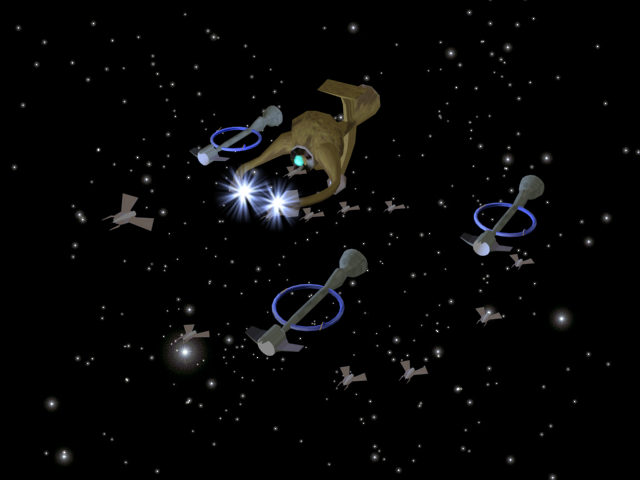

Trivia
On the lighter side
- Why is
it that when the stars are out, they are visible, but when the lights are
out, they are invisible?
- Error 406: File corrupt: config.earth – reboot universe?
- Black holes really suck…
- A day
without sunshine is like, you know, night.
- Living
on Earth in expensive, but it does include a free trip round the sun.
- Space isn't remote at all. It's only an hour's drive away if your car could go straight upwards. - Fred Hoyle
- Comets are
like cats. They have tails, and they do precisely what they want.
- Tagline:
New restaurant on Moon. Great food, No atmosphere
- There are 10^11 stars in the galaxy. That used to be a huge number. But it's only a hundred billion. It's less than the national deficit! We used to call them astronomical numbers. Now we should call them economical numbers. - Richard Feynman
- NASA just disclosed details why the rover wouldn't accept any commands. They took a picture of the rover's built-in display which showed a windows screen and the text "press any key to continue".
- Some
people see a partial eclipse and wonder why others talk so much about a
total eclipse. Seeing a partial eclipse and saying that you have seen an
eclipse is like standing outside an opera house and saying that you have
seen the opera; in both cases, you have missed the main event."-- Jay
M. Pasachoff (1983)
- According to jet propulsion laboratory program manager Donna Shirley, the modem manufacturer warned jpl that sending the modem to mars would void the warranty.
- Sherlock Holmes and Dr. Watson go on
a camping trip, set up their tent, and fall asleep. Some hours later, Holmes
wakes his faithful friend. "Watson, look up at the sky and tell
me what you see." Watson replies, "I see millions of
stars." "What does that tell you?" Watson ponders
a minute. "Astronomically speaking, it tells me that there are
millions of galaxies and potentially billions of planets. Astrologically, it
tells me that Saturn is in Leo. Time wise, it appears to be approximately a
quarter past three. Meteorologically, it seems we will have a beautiful day
tomorrow. What does it tell you?" Holmes is silent for a moment,
then speaks. "Watson, you idiot, someone has stolen our tent."
Did you know
- Astronomer = moon starer (on rearranging) :)
- If you think that's cool, here's a better That's
one small step for a man; one giant leap for mankind.
A
thin man ran... made a large stride... left planet... pined flag on moon...
on to Mars!
-
That Saturn has such a
low density that it would float if put in water!
- That the energy in the
sunlight we see today started out in the core of the Sun 30,000 years ago -
it spent most of this time passing through the dense atoms
that make the sun
and just 8 minutes to reach us once it had left the Sun!
- That
a Supernova explosion produces more energy in its first ten seconds than the
Sun during the whole of its 10 billion year lifetime and that for a brief
period, it creates more energy than the rest of a galaxy put together
Space fiction and Art

Quiz section
First quiz has been released on our newsgroup. It was given during the
introductory lecture.
1. When a total lunar eclipse occurs, what phase should the moon be in?
2. The Great Red Spot is found on Jupiter. Where would you find the Great Dark Spot?
3. What are the concentric gaps in the asteroid belt called?
4. The Large Electron Positron Collider (LEP) , a particle accelerator at CERN in Geneva was one of the largest scientific instrument ever constructed ( 27 Km in circumference!). Connect LEP and a fundamental particle discovered in 1983 and the Moon.
5. To the right is are a few drawings by Galileo of something he saw and interpreted as two satellites around a planet. What is it actually?
6. The angular diameter of this celestial body is 4 degrees, nearly eight times that of the moon. Easily visible to the naked eye on clear nights, it was first documented by the Persian astronomer Abd Al-Rahman Al Sufi. Name it.
7. Forest fires in western Canada in Sept ,1950 and the Volcanic explosion in Krakatoa , Indonesia in 1883 (considered to be the most powerful volcanic eruption in recorded history) gave rise to a weather phenomenon whose name is still in usage ,although in a different context.Which Phenomenon are we talking about ?
Answers (in black, select or press Ctrl+A to view)
1. Full moon
2. Neptune
3. Kirkwood Gaps
4. The connection is that the Moon's tidal interaction causes deformation of about a millimter in the 27 Km circumference Ring of the LEP , the particle accelerator shown in the picture.This deformation caused an error in the estimates of the Mass of the Z Boson( a fundamental particle which was being investigated at CERN) by about 0.02%.See the CERN bulletin which tells all about this and other wierd effects like how the level of water in the nearby lake Geneva affected the results ! (http://bulletin.cern.ch/9809/art1/Text_E.html)
5. Rings of Saturn
6. Andromeda galaxy
7. Blue moon
All are invited to contribute to this section. Please mail us at astronomy.iitk@gmail.com
. Your efforts will be greatly appreciated
- Webmaster